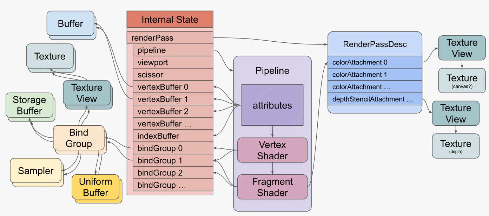

WebGPU
Table of Contents
An Rendering api that for web platform. From my point of view, it’s very easy to use.

1. My Questions
1.1. How Shader retrive inputs and send output from and to render target ?
By fiddle with Samples, which is named as HelloTriangle, in Dawn Repository, Vertex Shader get inputs by qualified parameter with ’@location(n)’, where n is Naturals. This qualifier is used to determine the source of resources to initialize the correspond variable.
More precisely, ’@location(n)’ specify which Render Target, is used as input or output. As description in this link, render target is actually a buffer or texture that works as a place for intermediate rendering.
As shown in above diagram, vertexBuffer 0 - n can be treated as render targets. But index of vertexBuffer is not necessary to match with n in ’@location(n)’. Location of vertexBuffer is determined by shaderlocation of attributes. An example of setup location for vertexBuffer is the function initRender() in ComputeBoids.cpp, which is a sample of dawn.
1.2. As we know, compute shader is not for rendering purposes so what inputs it required ?
The most obvious part that different from HelloTriangle is qualifier, @binding(0) @group(0). By reference, it means the shader program use specific resource from binding group as datas to perform computing.
After reading specification of WebGPU I find that compute shader access resources external to pipeline stages via BindGroup. BindGroup is a key-value structure that Naturals as index and render target as value. Compute Pipeline is associated with bindgroups in during creation of pass.
1.3. What cost graph memory ?
All those resource, GPUBuffer, GPUTexture, on GPU should cost graph memory at least, so those interfaces related to resources. What does not sure is cost of command in pass.
2. Pieces of Jigsaw Puzzle
- Reference : An object that a particular agent can use to access a set of memory locations. So its analogy to pointer in C.
2.1. Resources
Resources of WebGPU can be category into + GPUBuffer
- GPUTexture